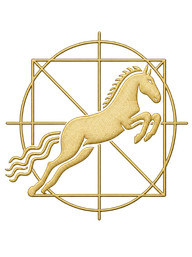

Head up. Airway filling.
healthy mares kept from lowering their heads for a day or two showed more bacteria, more white blood cells, or both, in a windpipe sample. Every change reversed once the heads came down (Australian Veterinary Journal, 1990).
for bacteria to climb with the head held up, in a follow-up study; clearing took another 8 to 12 hours with the head down (Australian Veterinary Journal, 1995). A New York to Wellington haul by road is about 1,200 miles, well past that window.
Before the trip south:
Tied the way the shipper ties, can your horse’s nose drop below the point of shoulder? Photograph the setup and note the planned hours on the road.
On arrival and the next morning, take and log a temperature. Just record; your veterinarian reads it.
More hours head-up + less head-down = more for the airway to clear. Gravity is the best groom on the trip.
Follow Precision Equine HealthThat was a little snack. For the full meal, follow us on Facebook. Older studies from one research network, read at abstract level, with horses confined in stalls, not shipped in moving trailers; no study here compares tie lengths in a trailer. Ask your veterinarian how your horse should be tied for a long trip and what to log after arrival. We measure; your veterinarian diagnoses. Sources: Racklyeft DJ, Australian Veterinary Journal 1990;67(11):402–405 · Raidal SL, Love DN, Bailey GD, Australian Veterinary Journal 1995;72(2):45–50 (no DOI shown; record: agris.fao.org). Footage via Pexels: babak safari, Svitlana Oreshkina, Billy Llano, ROMAN ODINTSOV, Joshua Woroniecki, Irene Bokeh.